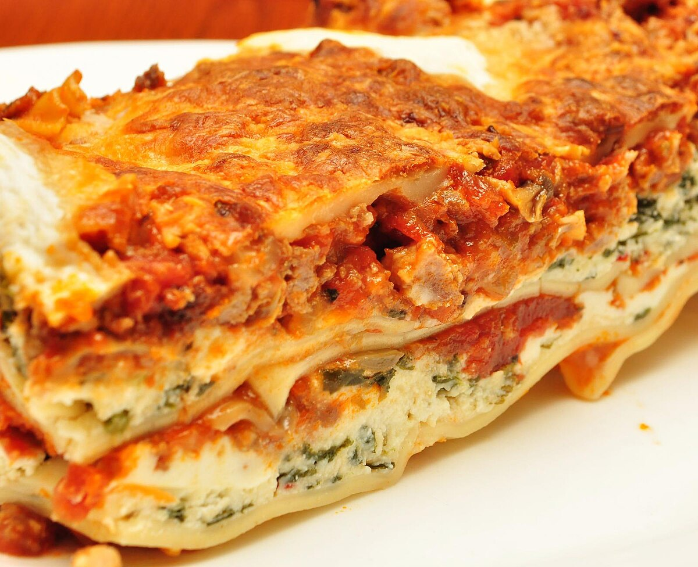

Lasagna

Ingredients
- 1/2 lb ground pork
- 1/2 lb lean ground beef
- 1/2 cup minced onion
- 1 (28oz) can crushed tomatos
- 1 (8oz) can tomato sauce
- 2tbsp chopped fresh parsley
- 1 clove garlic
Steps
- Combine pork and ground beef in a large, deep skillet over medium-high heat; cook and stir until browned and crumbly, 5 to 7 minutes. Add onion and cook until translucent, about 5 minutes.
- Stir in crushed tomatoes, tomato sauce, 1 tablespoon fresh parsley, garlic, basil, salt, oregano, and sugar. Reduce heat to medium-low and simmer, stirring occasionally, for 30 minutes.
- While the sauce is simmering, bring a large pot of lightly salted water to a boil. Cook lasagna noodles in the boiling water, stirring occasionally, until tender yet firm to the bite, 8 to 10 minutes. Drain and set aside.
- While the noodles are cooking, preheat the oven to 375 degrees F (190 degrees C).